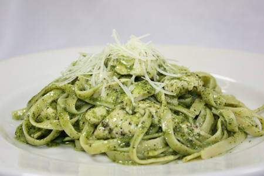
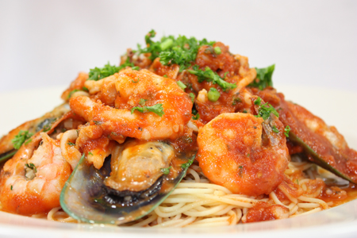
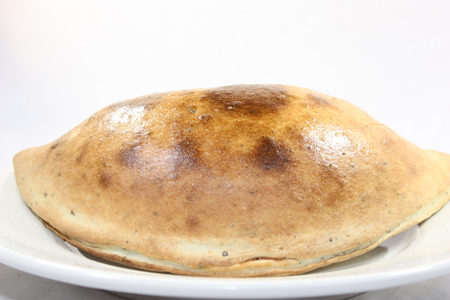

Welcome To
Gypsy's Trattoria Italiana
Why Choose Us?
Voted "Best of Berkeley" for Best Italian Food, Gypsy's Trattoria Italiana offers gourmet Italian food in fast food style! Each plate can be customized by our customers since nothing is pre-made. Everything is made from scratch in the restaurant on a daily basis, including base sauces, stocks, and meatballs. Prices are low and affordable, ranging from $8.74 to $12.74. Come in or call in today to experience the best Italian food Berkeley has to offer at a reasonable price!
Customer Favorites






